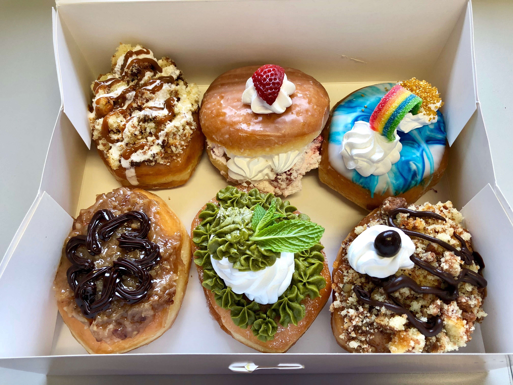
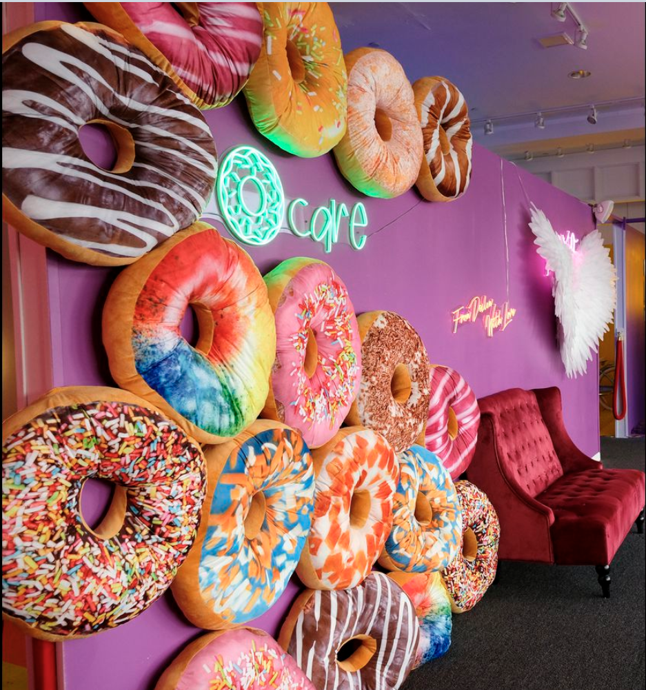
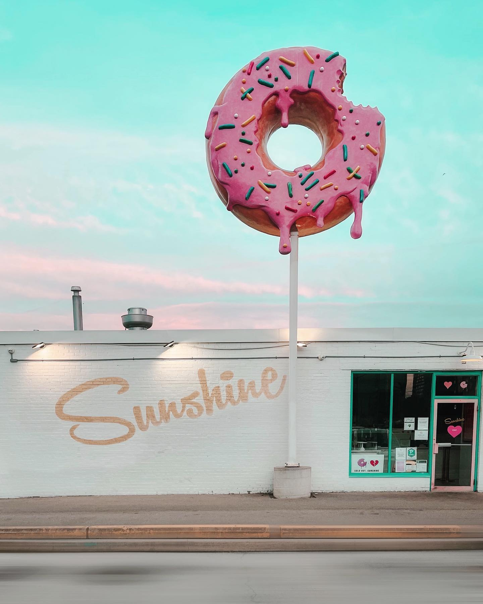
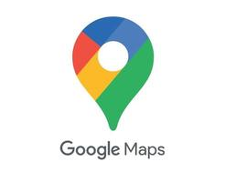

Non-Conformist

Non-conformists are typically those among us who stand out.
Never willing to settle for the tried and true, they are risk takers, creative thinkers, and often the life of any party.
At the very least, they usually have the best stories to tell (and the profiles to follow online).
They are up on pop-culture, have traveled or plan to travel to places most people have never heard of, and proudly and boldly live their life on their terms.
However, that doesn’t mean their lives are always instagramable as not all cutting edge ideas work out, but nothing matches the feeling of knowing, doing or tasting something remarkable long before everyone else catches on.
When it comes to their sweet treats, non-conformists are looking for originality, and can be drawn to global flavors. A little lotus paste from China, plum jam from Poland, pandan from South East Asia, or ube from the Philippines - the combination of these elements with the simple but classic donut create something unworldly or at least memorable and worthy of a food photo. They are drawn to cool mom and pop bakeries, or millennial and gen-z owned donut pop-up vendors. The smaller and/or more out of the way the better, especially if it has a selfie background so they can post about the experience online and let all the traditionalists know what they are missing. That is if the traditionalists are willing to use apps beyond Facebook.
Non-conformists donut shops include SunShine Donuts which is easy to find if you follow the big pink donut sign hanging over the store. They have donuts in beautiful pastel and bright prime colours worthy of a curated spot in your photo reel.
Find you closest Gormet doughnut places! Click the image.
